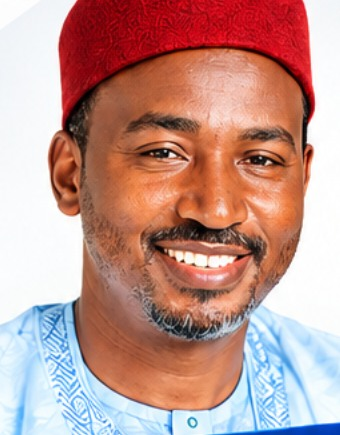

Explore the public service background, policy priorities and community development proposals of Adam Chindo Sodangi.

A place to examine experience, understand proposals and follow progress.
Discover the person ↗Six connected priorities focused on security, social services, agriculture, representation, inclusion and sustainable futures.
Peace, community engagement and responsive prevention.
Healthier communities and broader learning opportunities.
Supporting farmers and strengthening food security.
Voice, legislation and accountable engagement.
Opportunity for women, young people and entrepreneurs.
Long-term development and sustainable opportunity.
A political scientist and civil society advocate with over twenty years of experience in governance, policy advocacy and community development, according to his supplied biography.
A proposed ward-based training and empowerment programme to equip young people with practical digital skills and encourage local innovation.
Approved posts, photographs, interviews and videos from authorised accounts.
When authorised social URLs and permissions are configured, approved posts will appear here. This design preview intentionally contains no fictitious social activity.
Receive official news, policy updates and programme announcements. Unsubscribe whenever you wish.